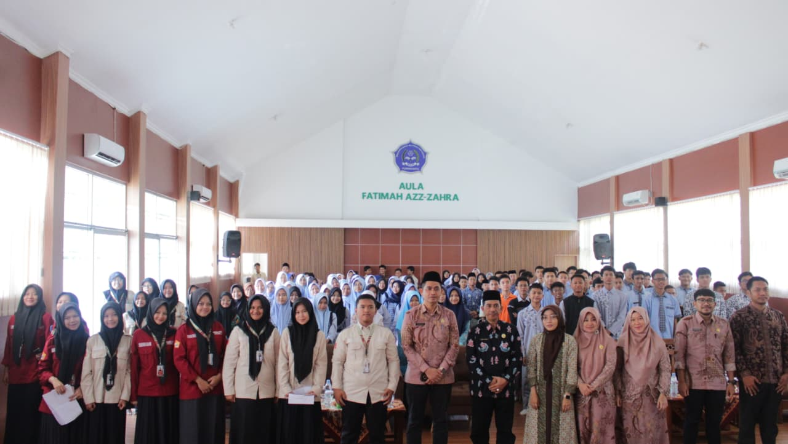
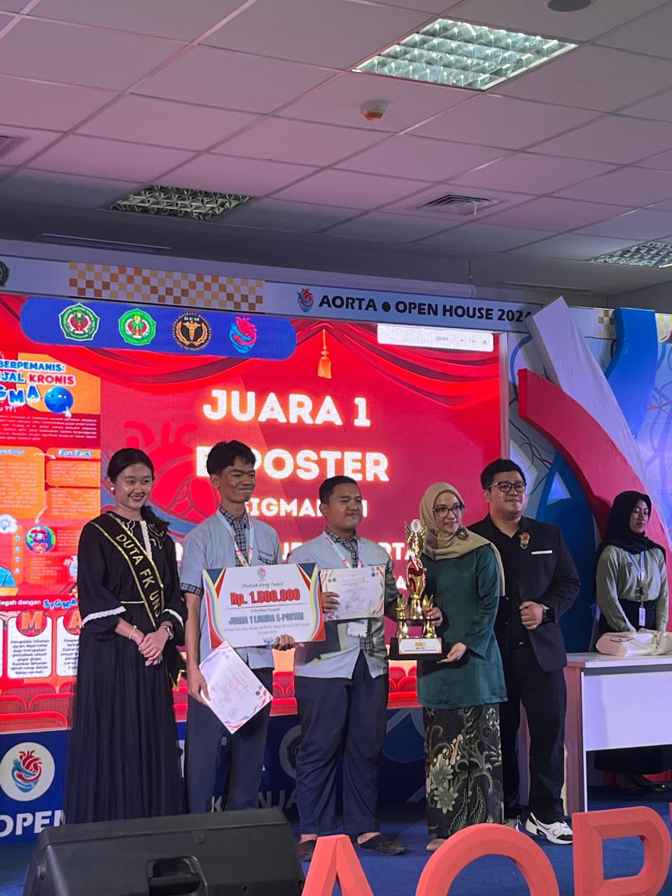

Pengalaman Unggulan

Ketua Umum OSIS MAN Purwakarta
Memimpin dan mengkoordinasikan seluruh program kerja, mengelola anggota, serta menjadi representasi siswa dalam komunikasi dengan pihak sekolah.

Dewan Pembimbing Forum OSIS MPK
Memberikan bimbingan dan arahan kepada pengurus, serta melakukan pengawasan dan evaluasi untuk memastikan keselarasan visi dan misi organisasi.

Juara 1 Lomba Poster Digital
Meraih Juara 1 dalam kompetisi desain poster digital tingkat Provinsi Jawa Barat pada tahun 2025, menunjukkan kemampuan dalam komunikasi visual.